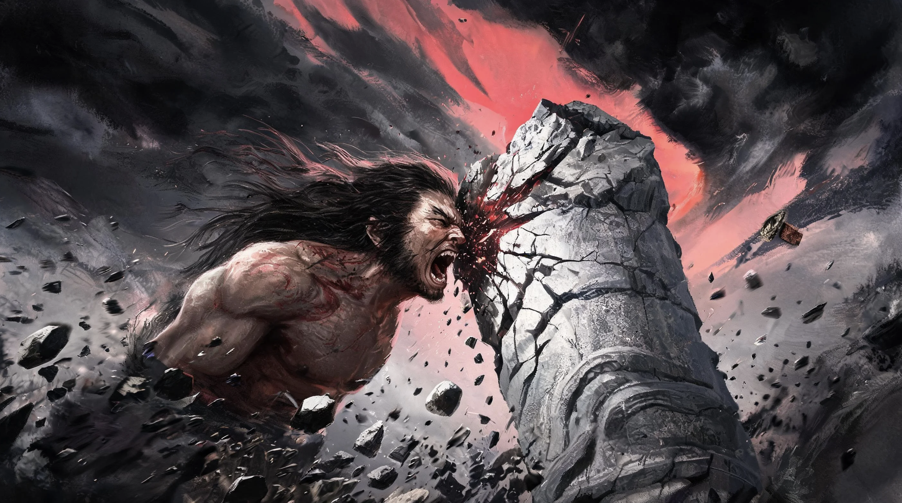

神
神话 · MYTHOS
中华神话重构系列 · 每日一期，署名负责
典藏书架
0
←
上期
卷
下期
→
No. 001 · 卷二 · 反叛与神罚
共工怒触不周山
天柱折，地维绝。那个不肯认输的人，把头撞向了不周山。
GX
✓
《山海经·大荒西经》·《淮南子》
翻开本期 · 开始阅读
→
25 分钟读完
·
8,792 字

神
中华神话重构系列 · 特刊
翻开阅读
↗
全部卷册 (30期)
卷一 · 创世与洪荒
卷二 · 反叛与神罚
卷三 · 人间与执念
卷四 · 志怪与幽冥
卷五 · 幻化与器物
藏书阁 · 我的书架
把值得反复重读的篇章，长久留在这里。自动记录阅读进度。
最近阅读足迹
典藏篇目
A-
A+
〈
1 / 12
〉
🔊
全书篇章目录